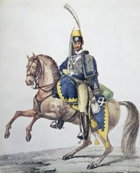

|
Född
27 dec 1758
i Alorp, Sjögestad (E)
1
.
Död 31 aug 1819 i Herrestad Storgård, Herrestad, Rappestad (E) 2 . |
|
Anders Eriksson
Född 27 dec 1758 i Alorp, Sjögestad (E) 1 . Död 31 aug 1819 i Herrestad Storgård, Herrestad, Rappestad (E) 2 . |
 F Erik Lindberg.Född 1701 i Hällestad (E) 3 . Död 4 feb 1787 i Skorteby, Viby (E) 3 . |
||
|
M
Elisabet Olofsdotter.
Född 12 sep 1728 i Stora Spärringe, Västerlösa (E) 4 . Död 23 nov 1779 i Skorteby, Viby (E) 5 . |
|||
|
Gift
26 dec 1785
i Sjögestad (E)
7
.
Kristina Andersdotter. Född 22 nov 1760 i Gammalkil (E) 8 . Död 30 apr 1837 i Herrestad, Rappestad (E) 9 . |
Framställd 6 nov 2026 med hjälp av Disgen version 2025.